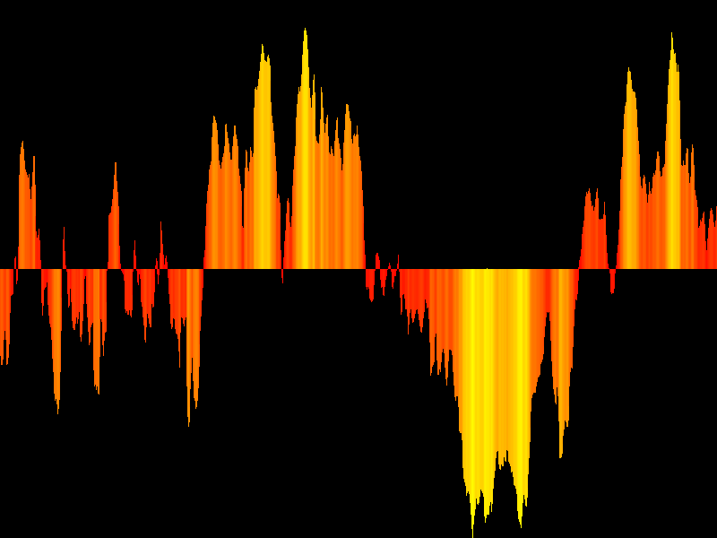
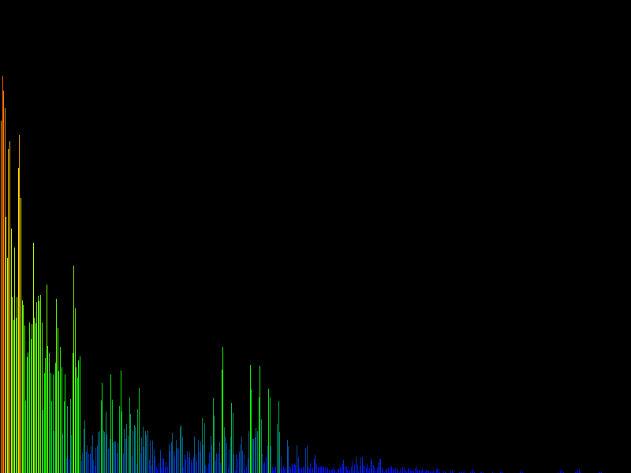
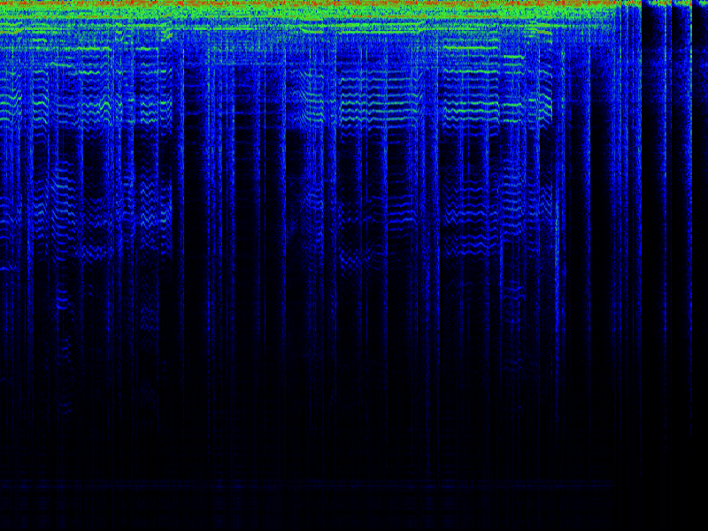
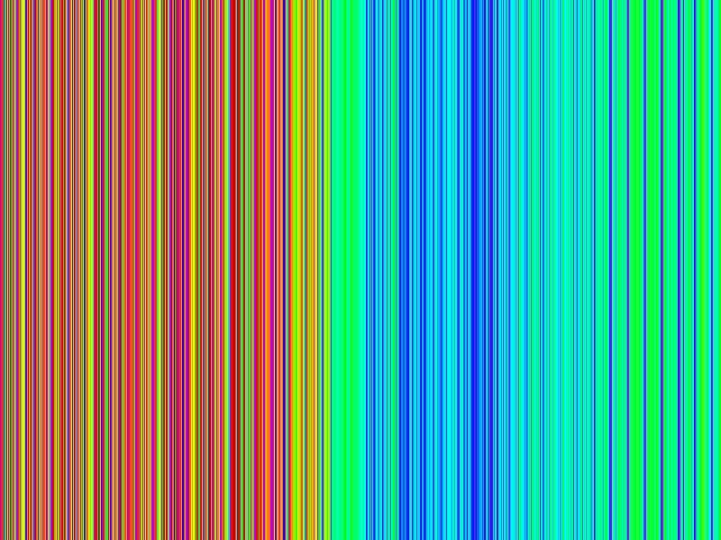
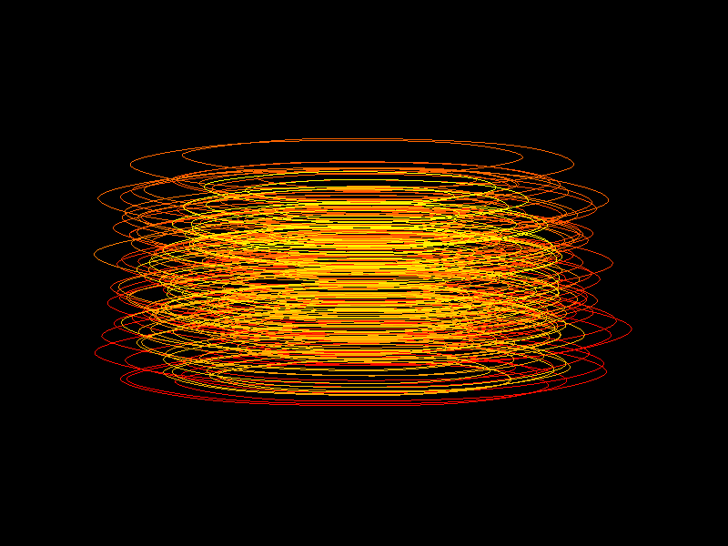
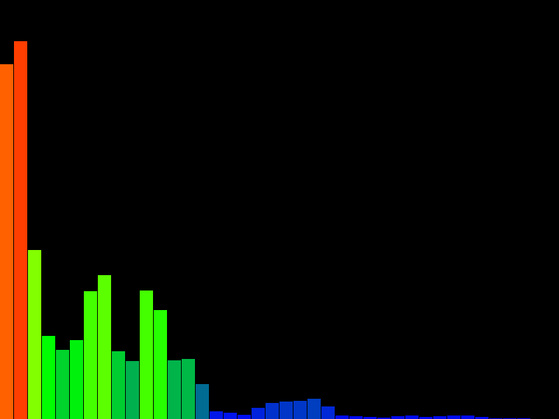
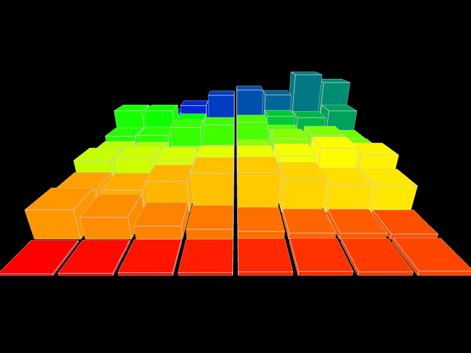

Processing Audio Visualization (PAV) - Visualizers
In PAV, visualization of music data is carried out by so called Visualizers. A visualization can consist of many Visualizers, all working independently from each other (more information is available on the home page). The current version contains 8 visualizers, which are introduced here. The images show the Visualizers in their default configuration, that is as they are configured when they are added to the visualization.
Waveform
Waveform is a simple Visualizer that visualizes the incoming audio signal by drawing time (horizontal axis) versus signal intensity (vertical axis). Type add waveform in the PAV window and hit enter to add. Spectrum
Spectrum visualizes the frequencies that comprise the incoming audio signal. The horizontal axis is the frequency, with the vertical axis being the intensity of the frequency band. Type add spectrum to add. Spectogram
This Visualizer visualizes the temporal change of the frequency distribution of the audio signal (see Wikipedia). Type add spectogram to add. Note that this Visualizer is rather slow with software rendering enabled. Rainbow
Rainbow draws bright color stripes based on the perceived brightness of the sound. type add rainbow to add. Note that this Visualizer is rather slow with software rendering enabled. Phasor
Phasor draws the intensity of the incoming audio data (vertical axis) versus its rate of change (first derivative, horizontal axis). This creates a ,morphing whirl'. Phasor works well with classical music. More information is available in this paper. Type add phasor to add. Mel Spectrum
The Mel Spectrum Visualizer visualizes the frequency distribution of the audio data as a Mel spectrum (see Wikipedia). Type add melspectrum to add. Boxes
Boxes draws boxes that change their height depending on frequencies of the incoming audio data. This resembles a three dimensional Mel spectrum. This Visualizer requires OpenGL mode (see home page). Type add boxes to add. Bubbles
This Visualizer spawns Bubbles at a rate based on the intensity of the incoming audio data. The position of the bubbles is chosen randomly, while rate and size depend on sound intensity. This Visualizer requires OpenGL mode (see home page). Type add bubbles to add. Note that this visualizer uses advanced GPU features, which can cause problems on some systems.In the current version Bubbles cannot be added to PAV via the add command due to technical restrictions. Therefore it is enabled by default in OpenGL mode.
Processing Audio Visualization (PAV)
Copyright (C) 2011 Christopher Pramerdorfer
Copyright (C) 2011 Christopher Pramerdorfer